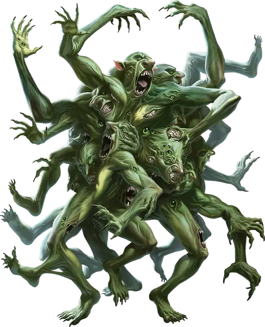

Сплав троллей
Troll Amalgam
Громадный Великан, обычно хаотично-злой

Класс Доспеха 15 (природный доспех)
Хиты 217 (14к20 + 70)
Скорость 60 футов, лазая 60 футов
| мод | спас | ||
|---|---|---|---|
| СИЛ | 25 | +7 | +7 |
| ЛОВ | 14 | +2 | +2 |
| ТЕЛ | 21 | +5 | +11 |
| мод | спас | ||
|---|---|---|---|
| ИНТ | 9 | −1 | −1 |
| МДР | 16 | +3 | +9 |
| ХАР | 5 | −3 | −3 |
Навыки Восприятие +9
Сопротивление урону яд; немагический дробящий, колющий, рубящий
Иммунитет к состояниям испуг, отравление, очарование
Чувства тёмное зрение 120 футов, пассивное Восприятие 19
Языки Великаний, Подземный
Опасность 17 (18000 опыта)
Бонус мастерства +6
Особенности
Легендарное сопротивление (3/день). Если сплав проваливает спасбросок, она может вместо этого сделать спасбросок успешным.
Сопротивление магии. Сплав совершает с преимуществом спасброски от заклинаний и прочих магических эффектов.
Регенерация. Сплав восстанавливает 15 хитов в начале своего хода. Если сплав получает урон кислотой или огнём, эта особенность не действует в начале следующего хода сплава. Сплав умирает, только если ему нанести не менее 20 хитов урона кислотой или огнём, когда у него 0 хитов.
Действия
Мультиатака. Сплав совершает три атака Разрывом.
Разрыв. . Рукопашная атака оружием: +13 к попаданию, досягаемость 15 футов, одна цель. Попадание: 25 (4к8 + 7) рубящего урона.
Бонусные действия
Бросок конечности (3/день). Дальнобойная атака оружием: +13 к попаданию, дистанция 60/240 футов, одна цель. Попадание: 11 (1к8 + 7) дробящего урона. Если конечность попадает в существо Среднего размера или меньше, это существо становится схваченным (Сл высвобождения 17). Конечность обладает блоком характеристик сплава троллей, за исключением следующего: она Средняя, у нее 45 хитов, ее скорость 30 футов, у нее нет ПО или Легендарного сопротивления, и единственное действие, которое она может совершить - это Атака, которую она может совершить только чтобы схватить.
Пока этот захват не закончится, цель так же опутана и получает 25 (4к8 + 7) рубящего урона в начале каждого своего хода. Если конечность не уничтожена в течение 24 часов после броска, бросьте к12; при результате "12" конечность регенерирует в тролля [troll]. В противном случае конечность отмирает.
Описание
В дварфийском сказании под названием "Сага о Гнарлдане стальном щите " утверждается, что бог Вапрак Разрушитель появился на свет, когда Аннам был ранен и его кровь пролилась на землю. Далее в сказании утверждается, что тролли родились подобным образом, когда была пролита кровь Вапрака. Какова бы ни была правда об их происхождении, тролли воплощают непоколебимую решимость расти и процветать, несмотря на все препятствия.
Быстрое заживление ран у троллей делает их подверженными причудливым мутациям, особенно когда они регенерируют в необычных условиях или излечиваются от необычных магических ран. Сплавы троллей и мутировавший тролль - два примера таких странно мутировавших форм.
Сплав троллей
Сплав троллей образуется, когда несколько троллей сливаются вместе во время регенерации. Иногда это происходит, когда много троллей погибает в одной битве, когда части троллей выбрасываются в склепы или братские могилы, или в результате извращенных ритуалов злых заклинателей. Иногда тролли, поклоняющиеся Вапраку, слышат призыв собраться в Подземье и совершить ужасный обряд, который превращает их в сплав, считающуюся воплощением их грозного бога.
Сплав троллей - это бесформенная масса движущейся плоти, когтей и лиц. Если существо пытается напасть на него из-за пределов его досягаемости или сбежать через небольшой туннель, сплав троллей отрывает кусок своего собственного тела и швыряет его в существо. Эти части тела в конечном счете регенерируют в полноценного тролля, а иногда они собираются и объединяются в новый сплав троллей.